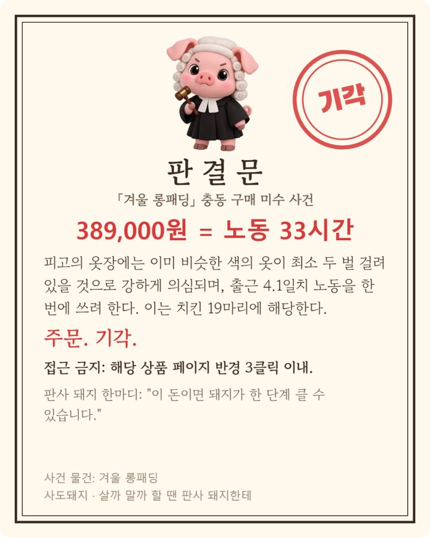
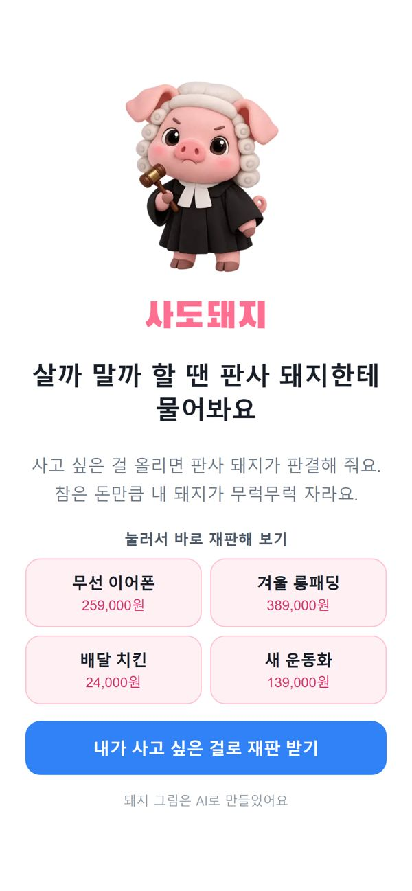

사고 싶은 물건을 넣으면 판사 돼지가 판결을 내려 주는 앱이에요. 코드는 전부 Claude Code가 썼고, 저는 말로 시키고 폰으로 눌러 봤어요. 시킨 순서대로 적었어요.

11월 12일에 무엇을 만들지 정했고, 11월 13일 저녁에 토스에 출시했어요.
토스 개발자 콘솔에 나온 숫자예요.
토스 안에서 돌아가는 작은 앱(앱인토스)으로 뭘 만들면 좋을지 먼저 조사를 시켰어요.
조사 1등은 출근 관련 앱이었는데 끌리지 않았어요. 웃기고 친구한테 보내고 싶은 쪽으로 다시 골랐어요.
정한 건 충동구매를 재판하는 앱이에요. 몇 시간 일해야 버는 돈인지 보여 주고, 참으면 돼지가 커요.
토스가 내놓은 앱 틀로 시작했어요. 돼지 그림은 AI로 그렸고, 몇 가지 시안 중에 점토 인형 느낌을 골랐어요.
고칠 곳은 화면을 보고 말로 했어요. 옷을 하나씩 겹쳐 입히니 어색해서 세트로 해라고 했고, 랭킹 기간도 일주일은 짧다고 하니 한 달로 바뀌었어요.
로고도 처음 것은 마음에 안 들어서 다시 그리게 했어요.
판결은 AI가 그때그때 지어내는 게 아니에요. 미리 써 둔 문장 틀을 물건 종류와 시간에 맞게 골라 붙여요. 결과는 무죄, 집행유예, 기각, 중형 중 하나예요.
친구들에게 써 보라고 했더니 목도리에 옷장 얘기가 나오고, 세일이라고 한 적도 없는데 세일 얘기가 나왔어요. 그 말을 그대로 전해서 세 번 고쳤어요.
그 뒤로는 문장을 바꿀 때마다 모든 물건에 붙여 보는 검사를 Claude가 먼저 돌려요.
친구에게 투표를 받는 배심원 기능과 돼지 랭킹은 서버가 있어야 해요. Cloudflare의 서버(Workers)와 데이터베이스(D1)를 쓰게 했어요.
Cloudflare 로그인은 제가 했고, 만들고 올리는 건 Claude가 했어요. 전화번호나 이메일 같은 개인 정보는 받지 않아요.
토스 개발자 콘솔에 앱 파일을 올리고 등록 양식을 채우는 일도 Claude가 크롬 화면에서 했어요. 약속 항목에 체크하고 검토를 요청하는 버튼은 제가 눌렀어요.
앱 파일은 10MB를 넘으면 안 올라가요. 글꼴 파일을 줄여서 11.4MB를 6.8MB로 맞췄어요.
파일만 올리고 '임시저장'을 안 누르면 검토에 그 버전이 안 들어가요. 저희도 한 번 헷갈렸어요.
광고 수익이나 결제를 받으려면 사업자 등록이 필요해요. 이건 직접 해야 해요.
광고를 끝까지 보면 재판을 한 번 더 받을 수 있게 했어요. 11월 16일에는 돼지 꾸미기 옷을 550원부터 파는 결제도 붙였어요.
11월 17일에 낸 버전은 반려됐어요. 앱 파일 안에 시험용 광고 번호가 들어 있다는 이유였어요.
시험용 번호는 시험할 때 만드는 파일에만 들어가게 바꿔 달라고 했어요. 다시 낸 버전은 그날 저녁 통과했어요.

AI가 만드는 결과는 시킬 때마다 조금씩 달라요. 같은 말을 해도 똑같은 앱이 나오지는 않아요.
토스, Anthropic, Cloudflare와 제휴는 없어요. 이 페이지는 AI의 도움을 받아 만들었어요.